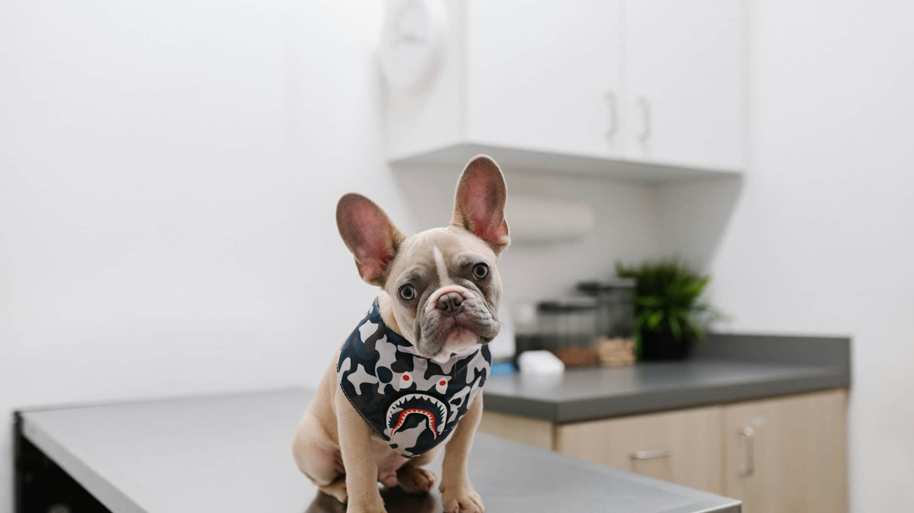
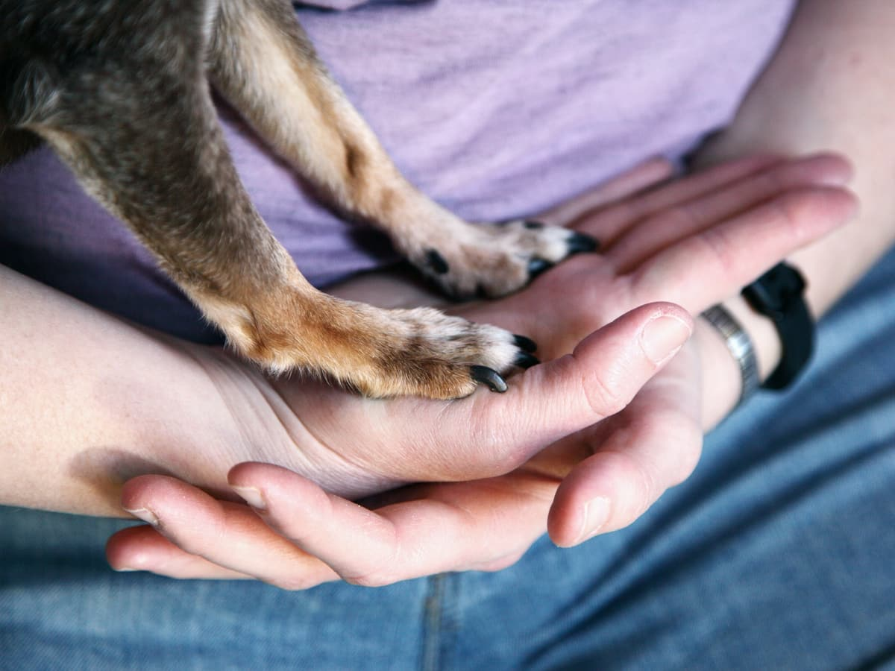
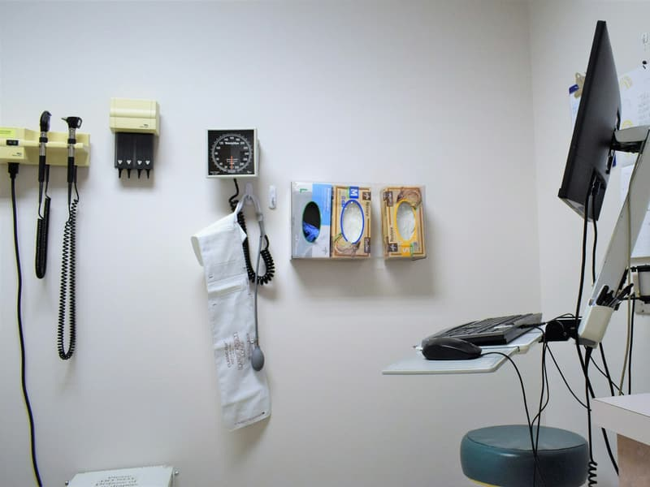
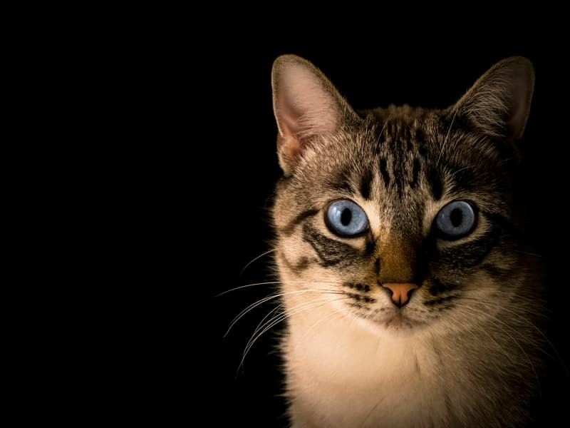

Konsultacje
Badanie, rozpoznanie i ustalenie dalszego postępowania.
cennik w przychodniPrzychodnia weterynaryjna · Kielce
Opieka nad zwierzętami przy Grunwaldzkiej. Konsultacje, profilaktyka i leczenie.
4,8 ocena w Google — 112 opinii

Oferta
Opis ogólny — dokładny zakres, godziny przyjęć i ewentualne dyżury uzupełnimy po rozmowie z lecznicą.
Badanie, rozpoznanie i ustalenie dalszego postępowania.
cennik w przychodniSzczepienia, odrobaczanie i regularne kontrole zdrowia.
cennik w przychodniProwadzenie terapii i kontrola postępów. Szczegółowy zakres do potwierdzenia.
cennik w przychodniCennik Cennik jest w przychodni. Nie publikujemy stawek, których nie potwierdziła lecznica — przy usługach medycznych to szczególnie ważne.

O nas
Przychodnia przyjmuje w Kielcach przy Grunwaldzkiej 31A. 112 opinii przy ocenie 4,8 to dobry wynik w branży, w której ludzie oceniają w emocjach.
Właściciel zwierzaka szuka lecznicy wtedy, kiedy coś się dzieje — często wieczorem i zawsze w pośpiechu. Bez strony w Google zostaje sama wizytówka.
Ta strona pokazuje adres, telefon i zakres opieki od razu, bez przewijania. To jest cała jej robota.


Zdjęcia ilustracyjne na wolnej licencji (Unsplash). Pełna lista autorów i źródeł: CREDITS.md.
Godziny otwarcia
Godziny do potwierdzenia z właścicielem — w wizytówce Google ich nie ma.
Adres
Grunwaldzka 31A, 25-736 Kielce
W sprawach pilnych najszybciej telefonicznie.